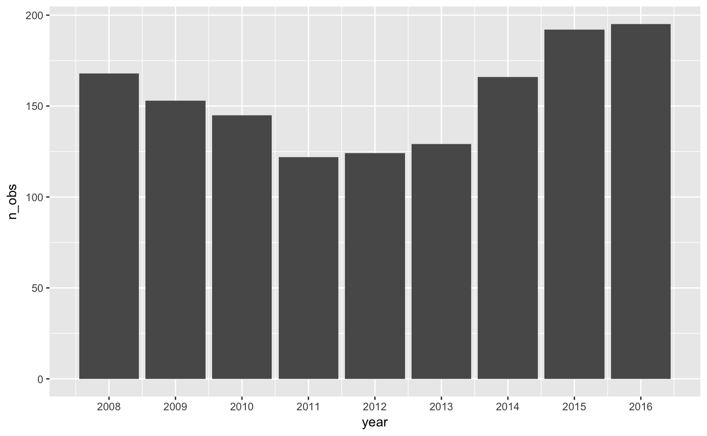

A data set containing murders for the years 2008 through 2016 in the City of St. Louis.
data(stlMurders)
A data frame with 1394 rows and 11 variables:
SLMPD record number
string date in dmy format for when murder occurred
year murder occurred
month murder occurred
day of month murder occurred
time murder occurred in 24-hour clock
HOMICIDE
SLMPD district where murder occurred
neighborhood where murder occurred, see for values
house address where murder occurred
street where murder occurred
St. Louis Metropolitan Police Department; original data cleaning and data set construction by Taylor Braswell
Asher, J. (2017, January 9). U.S. Cities Experienced Another Big Rise In Murder In 2016. FiveThiryEight, retrived from website.
str(stlMurders)#> 'data.frame': 1394 obs. of 11 variables: #> $ id : int 1988 2712 3276 3400 4689 4722 5567 6258 6295 6513 ... #> $ fullDate: chr "12jan2008" "17jan2008" "20jan2008" "21jan2008" ... #> $ year : int 2008 2008 2008 2008 2008 2008 2008 2008 2008 2008 ... #> $ month : int 1 1 1 1 1 1 2 2 2 2 ... #> $ day : int 12 17 20 21 30 30 4 9 9 11 ... #> $ time : int 1237 400 2119 1738 1534 1919 1745 1730 2259 2150 ... #> $ descrip : chr "HOMICIDE" "HOMICIDE" "HOMICIDE" "HOMICIDE" ... #> $ district: int 7 7 7 1 8 8 9 7 6 4 ... #> $ nhood : int 50 48 50 16 0 55 29 48 71 61 ... #> $ address : int 5738 5356 5826 3859 4100 2418 1646 5617 5001 1500 ... #> $ street : chr "TERRY AVE" "PAGE BLVD" "ROOSEVELT PL" "OHIO AVE" ...head(stlMurders)#> id fullDate year month day time descrip district nhood address #> 1 1988 12jan2008 2008 1 12 1237 HOMICIDE 7 50 5738 #> 2 2712 17jan2008 2008 1 17 400 HOMICIDE 7 48 5356 #> 3 3276 20jan2008 2008 1 20 2119 HOMICIDE 7 50 5826 #> 4 3400 21jan2008 2008 1 21 1738 HOMICIDE 1 16 3859 #> 5 4689 30jan2008 2008 1 30 1534 HOMICIDE 8 0 4100 #> 6 4722 30jan2008 2008 1 30 1919 HOMICIDE 8 55 2418 #> street #> 1 TERRY AVE #> 2 PAGE BLVD #> 3 ROOSEVELT PL #> 4 OHIO AVE #> 5 SAINT LOUIS AVE #> 6 N EUCLID AVEif (require("dplyr") & require("ggplot2")) { # what is the neighborhood with the most murders? stlMurders %>% group_by(nhood) %>% summarize(n_obs = n()) %>% arrange(desc(n_obs)) # top neighborhoods: 50 is Wells Goodfellow and 59 is Jeff Vanderlou # how have murders changed over time? stlMurders %>% group_by(year) %>% summarize(n_obs = n()) %>% arrange(year) %>% ggplot(aes(x = year, y = n_obs)) + geom_bar(stat="identity") + scale_x_continuous(breaks = c(2008:2016), labels = factor(2008:2016)) }